rm(list = ls())
library(ggplot2)
theme_set(theme_bw(base_size = 15))
source('https://gist.githubusercontent.com/liangyy/43912b3ecab5d10c89f9d4b2669871c9/raw/3ca651cfa53ffccb8422f432561138a46e93710f/my_ggplot_theme.R')
source('https://gist.githubusercontent.com/liangyy/4c647634fe00b3f042ebd1599dda65c7/raw/9977562b65d0fb63a693fa7fa60035a37641ad2f/qqplot_by_group')
library(dplyr)
options(stringsAsFactors = F)
library(patchwork)
library(data.table)
options(datatable.fread.datatable = F)
source('rlib.R')
library(pander)
panderOptions("table.split.table", Inf)
library(ggpubr)Here we focus on fluid intelligence phenotype in UK Biobank. Specifically, we extract information from 20016 and 20191. The phenotype query was done by Sabrina and the resulting files are at /gpfs/data/im-lab/nas40t2/Data/UKB/ukbrest-queries/2020-11-24-fluid-intelligence. The proprocessing of the raw query was done by misc_data/imagexcan_preprocessing_intelligence.py. And the ImageXcan run was done in submission/imagexcan/run_round_1_fintel.screen
Load dMRI and T1 IDP annotations.
t1 = readRDS('../misc_data/process_t1/t1_meta.rds')
t1 = t1 %>% mutate(IDP = paste0('IDP-', FieldID))
dmri = readRDS('../misc_data/download_some_matching_files/annot_dmri_idps.rds')
dmri = dmri %>% mutate(IDP = paste0('IDP-', FieldID))
idps = c('t1', 'dmri')
df_annot = rbind(
t1 %>% select(IDP, Field),
dmri %>% select(IDP, Field)
)Load ImageXcan results.
df_xcan = list()
for(idp in idps) {
tmp = read.csv(paste0('~/Desktop/tmp/ukb_idp/data/imagexcan_round_1.fintel.linear.', idp, '.csv'))
tmp2 = read.csv(paste0('~/Desktop/tmp/ukb_idp/data/imagexcan_round_1.fintel.susie.', idp, '.csv'))
tmp = inner_join(tmp, tmp2, by = c('IDP', 'phenotype'))
df_xcan[[length(df_xcan) + 1]] = tmp %>% mutate(type = idp)
}
df_xcan = do.call(rbind, df_xcan)qqplot_by_group(df_xcan$pval, df_xcan$type) + th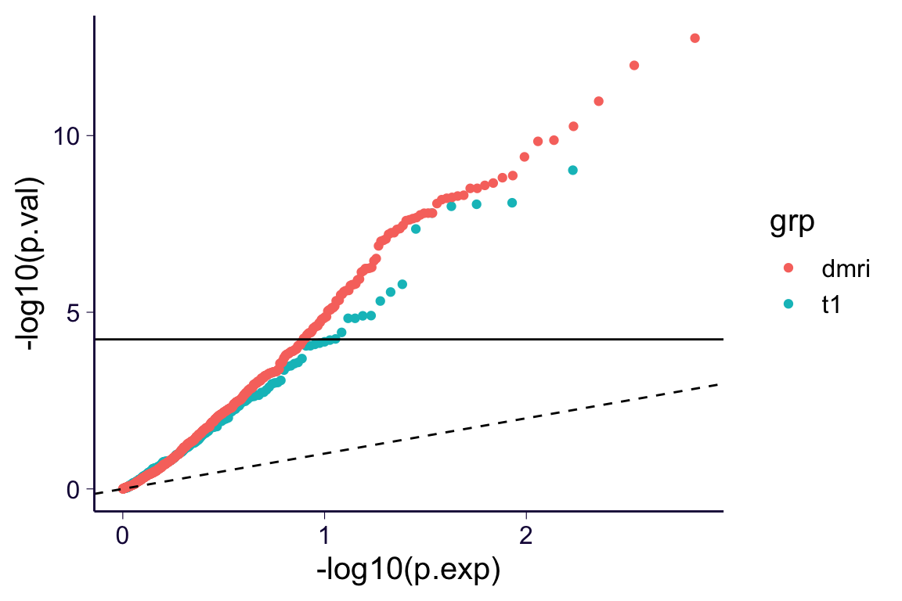
df_xcan %>% ggplot() + geom_point(aes(x = IDP, y = pip, color = factor(cs))) +
facet_wrap(~type, scales = 'free_x', ncol = 1) +
th2 +
theme(axis.text.x = element_blank())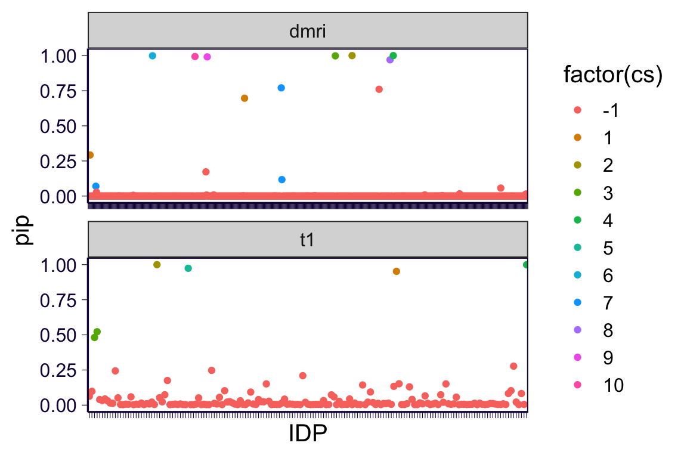
df_xcan %>% mutate(p_adj = pval * n()) %>% filter(p_adj < 0.05) %>% inner_join(df_annot, by = 'IDP') %>% pander(caption = 'Bonferroni significant IDP-level (alpha = 0.05)') | IDP | phenotype | bhat | pval | pip | cs | type | p_adj | Field |
|---|---|---|---|---|---|---|---|---|
| IDP-25002 | fluid_intelligence | -1.137 | 5.69e-05 | 0.09814 | -1 | t1 | 0.04853 | Volume of peripheral cortical grey matter |
| IDP-25003 | fluid_intelligence | 0.2455 | 8.784e-09 | 0.4813 | 3 | t1 | 7.492e-06 | Volume of ventricular cerebrospinal fluid (normalised for head size) |
| IDP-25004 | fluid_intelligence | 0.2458 | 7.964e-09 | 0.5222 | 3 | t1 | 6.793e-06 | Volume of ventricular cerebrospinal fluid |
| IDP-25005 | fluid_intelligence | -1.08 | 3.719e-05 | 0.03936 | -1 | t1 | 0.03173 | Volume of grey matter (normalised for head size) |
| IDP-25011 | fluid_intelligence | 0.1848 | 4.809e-06 | 0.2438 | -1 | t1 | 0.004102 | Volume of thalamus (left) |
| IDP-25783 | fluid_intelligence | 0.2857 | 4.393e-08 | 0.9999 | 2 | t1 | 3.748e-05 | Volume of grey matter in Frontal Pole (right) |
| IDP-25784 | fluid_intelligence | 0.1634 | 1.244e-05 | 0.05285 | -1 | t1 | 0.01061 | Volume of grey matter in Insular Cortex (left) |
| IDP-25804 | fluid_intelligence | -0.4037 | 1.617e-06 | 0.2473 | -1 | t1 | 0.001379 | Volume of grey matter in Middle Temporal Gyrus, posterior division (left) |
| IDP-25819 | fluid_intelligence | -0.3585 | 1.484e-05 | 0.09282 | -1 | t1 | 0.01265 | Volume of grey matter in Supramarginal Gyrus, anterior division (right) |
| IDP-25825 | fluid_intelligence | -0.3789 | 1.262e-05 | 0.151 | -1 | t1 | 0.01077 | Volume of grey matter in Lateral Occipital Cortex, superior division (right) |
| IDP-25862 | fluid_intelligence | 0.3743 | 1.484e-05 | 0.1434 | -1 | t1 | 0.01266 | Volume of grey matter in Frontal Operculum Cortex (left) |
| IDP-25874 | fluid_intelligence | 0.2872 | 1.001e-08 | 0.1336 | -1 | t1 | 8.537e-06 | Volume of grey matter in Supracalcarine Cortex (left) |
| IDP-25875 | fluid_intelligence | 0.3015 | 9.522e-10 | 0.9523 | 1 | t1 | 8.122e-07 | Volume of grey matter in Supracalcarine Cortex (right) |
| IDP-25880 | fluid_intelligence | -0.1983 | 2.679e-06 | 0.13 | -1 | t1 | 0.002285 | Volume of grey matter in Caudate (left) |
| IDP-25057 | fluid_intelligence | -0.2899 | 1.76e-08 | 0.0001202 | -1 | dmri | 1.501e-05 | Mean FA in pontine crossing tract on FA skeleton |
| IDP-25059 | fluid_intelligence | -0.2988 | 1.454e-10 | 0.2925 | 1 | dmri | 1.241e-07 | Mean FA in body of corpus callosum on FA skeleton |
| IDP-25068 | fluid_intelligence | 0.1763 | 9.203e-08 | 0.07003 | 7 | dmri | 7.85e-05 | Mean FA in superior cerebellar peduncle on FA skeleton (right) |
| IDP-25069 | fluid_intelligence | 0.1777 | 5.607e-08 | 0.02787 | -1 | dmri | 4.782e-05 | Mean FA in superior cerebellar peduncle on FA skeleton (left) |
| IDP-25091 | fluid_intelligence | -0.302 | 5.463e-11 | 0.0004638 | -1 | dmri | 4.66e-08 | Mean FA in cingulum cingulate gyrus on FA skeleton (left) |
| IDP-25104 | fluid_intelligence | -0.3984 | 5.136e-09 | 0.001593 | -1 | dmri | 4.381e-06 | Mean MD in middle cerebellar peduncle on FA skeleton |
| IDP-25106 | fluid_intelligence | 0.2563 | 2.234e-08 | 0.000126 | -1 | dmri | 1.905e-05 | Mean MD in genu of corpus callosum on FA skeleton |
| IDP-25107 | fluid_intelligence | 0.2541 | 1.559e-08 | 2.967e-05 | -1 | dmri | 1.33e-05 | Mean MD in body of corpus callosum on FA skeleton |
| IDP-25108 | fluid_intelligence | 0.2749 | 1.925e-05 | 3.125e-07 | -1 | dmri | 0.01642 | Mean MD in splenium of corpus callosum on FA skeleton |
| IDP-25126 | fluid_intelligence | 0.4868 | 5.786e-07 | 0.005681 | -1 | dmri | 0.0004936 | Mean MD in anterior corona radiata on FA skeleton (right) |
| IDP-25130 | fluid_intelligence | 0.4054 | 6.715e-06 | 6.466e-08 | -1 | dmri | 0.005728 | Mean MD in posterior corona radiata on FA skeleton (right) |
| IDP-25140 | fluid_intelligence | -0.5159 | 1.753e-06 | 1.105e-07 | -1 | dmri | 0.001495 | Mean MD in cingulum hippocampus on FA skeleton (right) |
| IDP-25156 | fluid_intelligence | 0.2775 | 1.563e-08 | 0.9988 | 6 | dmri | 1.333e-05 | Mean MO in splenium of corpus callosum on FA skeleton |
| IDP-25187 | fluid_intelligence | -0.237 | 4.722e-06 | 4.248e-06 | -1 | dmri | 0.004028 | Mean MO in cingulum cingulate gyrus on FA skeleton (left) |
| IDP-25191 | fluid_intelligence | 0.1766 | 1.355e-09 | 0.0004395 | -1 | dmri | 1.156e-06 | Mean MO in fornix cres+stria terminalis on FA skeleton (left) |
| IDP-25200 | fluid_intelligence | -0.2219 | 4.74e-06 | 1.056e-05 | -1 | dmri | 0.004043 | Mean L1 in middle cerebellar peduncle on FA skeleton |
| IDP-25202 | fluid_intelligence | 0.1605 | 7.45e-06 | 1.434e-05 | -1 | dmri | 0.006355 | Mean L1 in genu of corpus callosum on FA skeleton |
| IDP-25204 | fluid_intelligence | 0.1191 | 2.454e-05 | 1.368e-05 | -1 | dmri | 0.02093 | Mean L1 in splenium of corpus callosum on FA skeleton |
| IDP-25222 | fluid_intelligence | 0.3486 | 2.093e-08 | 0.9933 | 10 | dmri | 1.785e-05 | Mean L1 in anterior corona radiata on FA skeleton (right) |
| IDP-25226 | fluid_intelligence | 0.2874 | 4.473e-05 | 1.745e-07 | -1 | dmri | 0.03816 | Mean L1 in posterior corona radiata on FA skeleton (right) |
| IDP-25235 | fluid_intelligence | -0.2321 | 1.555e-09 | 2.69e-05 | -1 | dmri | 1.326e-06 | Mean L1 in cingulum cingulate gyrus on FA skeleton (left) |
| IDP-25239 | fluid_intelligence | 0.2527 | 2.415e-08 | 0.1725 | -1 | dmri | 2.06e-05 | Mean L1 in fornix cres+stria terminalis on FA skeleton (left) |
| IDP-25240 | fluid_intelligence | 0.3891 | 5.607e-09 | 0.007449 | -1 | dmri | 4.782e-06 | Mean L1 in superior longitudinal fasciculus on FA skeleton (right) |
| IDP-25241 | fluid_intelligence | 0.2334 | 8.453e-08 | 0.9909 | 9 | dmri | 7.211e-05 | Mean L1 in superior longitudinal fasciculus on FA skeleton (left) |
| IDP-25248 | fluid_intelligence | -0.3006 | 2.426e-05 | 1.009e-07 | -1 | dmri | 0.0207 | Mean L2 in middle cerebellar peduncle on FA skeleton |
| IDP-25249 | fluid_intelligence | 0.3095 | 3.39e-05 | 7.873e-07 | -1 | dmri | 0.02892 | Mean L2 in pontine crossing tract on FA skeleton |
| IDP-25251 | fluid_intelligence | 0.2749 | 4.876e-09 | 0.008204 | -1 | dmri | 4.16e-06 | Mean L2 in body of corpus callosum on FA skeleton |
| IDP-25283 | fluid_intelligence | 0.2176 | 4.56e-06 | 3.626e-06 | -1 | dmri | 0.00389 | Mean L2 in cingulum cingulate gyrus on FA skeleton (left) |
| IDP-25284 | fluid_intelligence | -0.2298 | 3.735e-05 | 1.554e-07 | -1 | dmri | 0.03186 | Mean L2 in cingulum hippocampus on FA skeleton (right) |
| IDP-25296 | fluid_intelligence | -0.3372 | 3.074e-06 | 5.111e-06 | -1 | dmri | 0.002622 | Mean L3 in middle cerebellar peduncle on FA skeleton |
| IDP-25297 | fluid_intelligence | 0.9131 | 5.935e-09 | 0.002293 | -1 | dmri | 5.063e-06 | Mean L3 in pontine crossing tract on FA skeleton |
| IDP-25298 | fluid_intelligence | 0.2768 | 8.38e-09 | 0.0004508 | -1 | dmri | 7.148e-06 | Mean L3 in genu of corpus callosum on FA skeleton |
| IDP-25299 | fluid_intelligence | 0.34 | 1.742e-13 | 0.6967 | 1 | dmri | 1.486e-10 | Mean L3 in body of corpus callosum on FA skeleton |
| IDP-25331 | fluid_intelligence | 0.3611 | 6.74e-07 | 5.593e-05 | -1 | dmri | 0.000575 | Mean L3 in cingulum cingulate gyrus on FA skeleton (left) |
| IDP-25346 | fluid_intelligence | -0.2444 | 3.998e-10 | 0.001467 | -1 | dmri | 3.41e-07 | Mean ICVF in genu of corpus callosum on FA skeleton |
| IDP-25347 | fluid_intelligence | -0.174 | 2.53e-05 | 4.861e-05 | -1 | dmri | 0.02158 | Mean ICVF in body of corpus callosum on FA skeleton |
| IDP-25356 | fluid_intelligence | 0.162 | 5.371e-07 | 0.7704 | 7 | dmri | 0.0004581 | Mean ICVF in superior cerebellar peduncle on FA skeleton (right) |
| IDP-25357 | fluid_intelligence | 0.1553 | 1.662e-06 | 0.1173 | 7 | dmri | 0.001418 | Mean ICVF in superior cerebellar peduncle on FA skeleton (left) |
| IDP-25366 | fluid_intelligence | -0.3876 | 4.529e-08 | 0.0001671 | -1 | dmri | 3.863e-05 | Mean ICVF in anterior corona radiata on FA skeleton (right) |
| IDP-25367 | fluid_intelligence | -0.3416 | 1.214e-06 | 0.0001688 | -1 | dmri | 0.001035 | Mean ICVF in anterior corona radiata on FA skeleton (left) |
| IDP-25379 | fluid_intelligence | -0.3093 | 3.514e-07 | 7.012e-06 | -1 | dmri | 0.0002997 | Mean ICVF in cingulum cingulate gyrus on FA skeleton (left) |
| IDP-25388 | fluid_intelligence | -0.1766 | 1.52e-05 | 2.326e-06 | -1 | dmri | 0.01297 | Mean ICVF in uncinate fasciculus on FA skeleton (right) |
| IDP-25404 | fluid_intelligence | -0.1265 | 2.844e-05 | 4.883e-06 | -1 | dmri | 0.02426 | Mean OD in superior cerebellar peduncle on FA skeleton (right) |
| IDP-25405 | fluid_intelligence | -0.1246 | 4.147e-05 | 6.367e-06 | -1 | dmri | 0.03538 | Mean OD in superior cerebellar peduncle on FA skeleton (left) |
| IDP-25408 | fluid_intelligence | -0.2425 | 5.788e-07 | 0.002889 | -1 | dmri | 0.0004937 | Mean OD in anterior limb of internal capsule on FA skeleton (right) |
| IDP-25414 | fluid_intelligence | -0.225 | 1.347e-05 | 0.0001234 | -1 | dmri | 0.01149 | Mean OD in anterior corona radiata on FA skeleton (right) |
| IDP-25419 | fluid_intelligence | 0.2269 | 1.623e-05 | 5.529e-06 | -1 | dmri | 0.01385 | Mean OD in posterior corona radiata on FA skeleton (left) |
| IDP-25427 | fluid_intelligence | 0.3069 | 1.575e-08 | 5.548e-05 | -1 | dmri | 1.343e-05 | Mean OD in cingulum cingulate gyrus on FA skeleton (left) |
| IDP-25431 | fluid_intelligence | -0.1963 | 2.035e-05 | 1.511e-05 | -1 | dmri | 0.01736 | Mean OD in fornix cres+stria terminalis on FA skeleton (left) |
| IDP-25440 | fluid_intelligence | -0.7762 | 1.028e-12 | 0.9982 | 3 | dmri | 8.77e-10 | Mean ISOVF in middle cerebellar peduncle on FA skeleton |
| IDP-25464 | fluid_intelligence | 1.063 | 1.338e-05 | 5.838e-07 | -1 | dmri | 0.01141 | Mean ISOVF in superior corona radiata on FA skeleton (right) |
| IDP-25466 | fluid_intelligence | 0.4182 | 1.063e-11 | 1 | 2 | dmri | 9.063e-09 | Mean ISOVF in posterior corona radiata on FA skeleton (right) |
| IDP-25480 | fluid_intelligence | 0.7376 | 6.504e-09 | 2.532e-05 | -1 | dmri | 5.548e-06 | Mean ISOVF in superior longitudinal fasciculus on FA skeleton (right) |
| IDP-25484 | fluid_intelligence | -0.4544 | 6.215e-08 | 1.322e-05 | -1 | dmri | 5.301e-05 | Mean ISOVF in uncinate fasciculus on FA skeleton (right) |
| IDP-25492 | fluid_intelligence | -0.5487 | 3.492e-08 | 9.704e-05 | -1 | dmri | 2.979e-05 | Weighted-mean FA in tract cingulate gyrus part of cingulum (left) |
| IDP-25494 | fluid_intelligence | 0.4873 | 2.55e-08 | 1.445e-06 | -1 | dmri | 2.175e-05 | Weighted-mean FA in tract parahippocampal part of cingulum (left) |
| IDP-25495 | fluid_intelligence | 0.208 | 8.494e-06 | 1.622e-07 | -1 | dmri | 0.007245 | Weighted-mean FA in tract parahippocampal part of cingulum (right) |
| IDP-25508 | fluid_intelligence | 0.7703 | 2.565e-09 | 0.7603 | -1 | dmri | 2.188e-06 | Weighted-mean FA in tract posterior thalamic radiation (right) |
| IDP-25521 | fluid_intelligence | -0.3991 | 8.594e-06 | 5.869e-08 | -1 | dmri | 0.007331 | Weighted-mean MD in tract parahippocampal part of cingulum (left) |
| IDP-25522 | fluid_intelligence | -0.1975 | 5.406e-05 | 4.153e-08 | -1 | dmri | 0.04611 | Weighted-mean MD in tract parahippocampal part of cingulum (right) |
| IDP-25525 | fluid_intelligence | 0.2436 | 3.215e-06 | 0.97 | 8 | dmri | 0.002742 | Weighted-mean MD in tract forceps major |
| IDP-25530 | fluid_intelligence | 0.5208 | 7.301e-07 | 1 | 4 | dmri | 0.0006228 | Weighted-mean MD in tract inferior longitudinal fasciculus (right) |
| IDP-25540 | fluid_intelligence | -0.3485 | 1.639e-06 | 2.589e-05 | -1 | dmri | 0.001398 | Weighted-mean MD in tract uncinate fasciculus (left) |
| IDP-25545 | fluid_intelligence | 0.1939 | 1.486e-05 | 8.76e-07 | -1 | dmri | 0.01268 | Weighted-mean MO in tract anterior thalamic radiation (right) |
| IDP-25546 | fluid_intelligence | -0.5781 | 3.109e-09 | 0.0007075 | -1 | dmri | 2.652e-06 | Weighted-mean MO in tract cingulate gyrus part of cingulum (left) |
| IDP-25548 | fluid_intelligence | 0.204 | 1.574e-06 | 4.166e-06 | -1 | dmri | 0.001343 | Weighted-mean MO in tract parahippocampal part of cingulum (left) |
| IDP-25549 | fluid_intelligence | 0.3934 | 1.149e-06 | 5.083e-06 | -1 | dmri | 0.0009805 | Weighted-mean MO in tract parahippocampal part of cingulum (right) |
| IDP-25573 | fluid_intelligence | -0.6356 | 1.348e-10 | 0.0003157 | -1 | dmri | 1.15e-07 | Weighted-mean L1 in tract cingulate gyrus part of cingulum (left) |
| IDP-25579 | fluid_intelligence | 0.2451 | 5.64e-07 | 0.008541 | -1 | dmri | 0.0004811 | Weighted-mean L1 in tract forceps major |
| IDP-25581 | fluid_intelligence | -0.3486 | 2.404e-06 | 4.121e-07 | -1 | dmri | 0.002051 | Weighted-mean L1 in tract inferior fronto-occipital fasciculus (left) |
| IDP-25584 | fluid_intelligence | 0.354 | 7.426e-06 | 1.89e-06 | -1 | dmri | 0.006335 | Weighted-mean L1 in tract inferior longitudinal fasciculus (right) |
| IDP-25594 | fluid_intelligence | -0.336 | 3.015e-07 | 1.198e-05 | -1 | dmri | 0.0002572 | Weighted-mean L1 in tract uncinate fasciculus (left) |
| IDP-25595 | fluid_intelligence | -0.3512 | 9.751e-08 | 0.0001087 | -1 | dmri | 8.318e-05 | Weighted-mean L1 in tract uncinate fasciculus (right) |
| IDP-25600 | fluid_intelligence | 0.3936 | 3.116e-09 | 0.0005194 | -1 | dmri | 2.658e-06 | Weighted-mean L2 in tract cingulate gyrus part of cingulum (left) |
| IDP-25602 | fluid_intelligence | -0.4699 | 1.322e-07 | 1.333e-07 | -1 | dmri | 0.0001128 | Weighted-mean L2 in tract parahippocampal part of cingulum (left) |
| IDP-25603 | fluid_intelligence | -0.229 | 2.413e-06 | 6.066e-08 | -1 | dmri | 0.002058 | Weighted-mean L2 in tract parahippocampal part of cingulum (right) |
| IDP-25611 | fluid_intelligence | 0.4076 | 2.705e-05 | 7.42e-08 | -1 | dmri | 0.02308 | Weighted-mean L2 in tract inferior longitudinal fasciculus (right) |
| IDP-25629 | fluid_intelligence | -0.4221 | 2.473e-06 | 9.944e-08 | -1 | dmri | 0.00211 | Weighted-mean L3 in tract parahippocampal part of cingulum (left) |
| IDP-25630 | fluid_intelligence | -0.1979 | 3.873e-05 | 5.039e-08 | -1 | dmri | 0.03304 | Weighted-mean L3 in tract parahippocampal part of cingulum (right) |
| IDP-25654 | fluid_intelligence | -0.2821 | 5.358e-05 | 1.252e-06 | -1 | dmri | 0.04571 | Weighted-mean ICVF in tract cingulate gyrus part of cingulum (left) |
| IDP-25681 | fluid_intelligence | 0.4777 | 5.599e-08 | 0.000129 | -1 | dmri | 4.776e-05 | Weighted-mean OD in tract cingulate gyrus part of cingulum (left) |
| IDP-25697 | fluid_intelligence | -0.4246 | 2.628e-06 | 0.05706 | -1 | dmri | 0.002242 | Weighted-mean OD in tract posterior thalamic radiation (right) |
| IDP-25719 | fluid_intelligence | 0.4308 | 2.2e-09 | 5.511e-08 | -1 | dmri | 1.876e-06 | Weighted-mean ISOVF in tract inferior longitudinal fasciculus (right) |
| IDP-25720 | fluid_intelligence | -0.3787 | 3.793e-05 | 6.774e-08 | -1 | dmri | 0.03236 | Weighted-mean ISOVF in tract middle cerebellar peduncle |
| IDP-25726 | fluid_intelligence | 0.2998 | 5.517e-05 | 1.063e-06 | -1 | dmri | 0.04706 | Weighted-mean ISOVF in tract superior longitudinal fasciculus (right) |
| IDP-25729 | fluid_intelligence | -0.4408 | 9.228e-06 | 5.637e-07 | -1 | dmri | 0.007872 | Weighted-mean ISOVF in tract uncinate fasciculus (left) |
df_xcan %>% filter(pip > 0.25) %>% inner_join(df_annot, by = 'IDP') %>% pander(caption = 'PIP > 25%') | IDP | phenotype | bhat | pval | pip | cs | type | Field |
|---|---|---|---|---|---|---|---|
| IDP-25003 | fluid_intelligence | 0.2455 | 8.784e-09 | 0.4813 | 3 | t1 | Volume of ventricular cerebrospinal fluid (normalised for head size) |
| IDP-25004 | fluid_intelligence | 0.2458 | 7.964e-09 | 0.5222 | 3 | t1 | Volume of ventricular cerebrospinal fluid |
| IDP-25783 | fluid_intelligence | 0.2857 | 4.393e-08 | 0.9999 | 2 | t1 | Volume of grey matter in Frontal Pole (right) |
| IDP-25795 | fluid_intelligence | 0.1856 | 8.116e-05 | 0.9741 | 5 | t1 | Volume of grey matter in Precentral Gyrus (right) |
| IDP-25875 | fluid_intelligence | 0.3015 | 9.522e-10 | 0.9523 | 1 | t1 | Volume of grey matter in Supracalcarine Cortex (right) |
| IDP-25920 | fluid_intelligence | -0.1236 | 8.885e-05 | 0.2775 | -1 | t1 | Volume of grey matter in X Cerebellum (right) |
| IDP-25059 | fluid_intelligence | -0.2988 | 1.454e-10 | 0.2925 | 1 | dmri | Mean FA in body of corpus callosum on FA skeleton |
| IDP-25156 | fluid_intelligence | 0.2775 | 1.563e-08 | 0.9988 | 6 | dmri | Mean MO in splenium of corpus callosum on FA skeleton |
| IDP-25222 | fluid_intelligence | 0.3486 | 2.093e-08 | 0.9933 | 10 | dmri | Mean L1 in anterior corona radiata on FA skeleton (right) |
| IDP-25241 | fluid_intelligence | 0.2334 | 8.453e-08 | 0.9909 | 9 | dmri | Mean L1 in superior longitudinal fasciculus on FA skeleton (left) |
| IDP-25299 | fluid_intelligence | 0.34 | 1.742e-13 | 0.6967 | 1 | dmri | Mean L3 in body of corpus callosum on FA skeleton |
| IDP-25356 | fluid_intelligence | 0.162 | 5.371e-07 | 0.7704 | 7 | dmri | Mean ICVF in superior cerebellar peduncle on FA skeleton (right) |
| IDP-25440 | fluid_intelligence | -0.7762 | 1.028e-12 | 0.9982 | 3 | dmri | Mean ISOVF in middle cerebellar peduncle on FA skeleton |
| IDP-25466 | fluid_intelligence | 0.4182 | 1.063e-11 | 1 | 2 | dmri | Mean ISOVF in posterior corona radiata on FA skeleton (right) |
| IDP-25508 | fluid_intelligence | 0.7703 | 2.565e-09 | 0.7603 | -1 | dmri | Weighted-mean FA in tract posterior thalamic radiation (right) |
| IDP-25525 | fluid_intelligence | 0.2436 | 3.215e-06 | 0.97 | 8 | dmri | Weighted-mean MD in tract forceps major |
| IDP-25530 | fluid_intelligence | 0.5208 | 7.301e-07 | 1 | 4 | dmri | Weighted-mean MD in tract inferior longitudinal fasciculus (right) |
df_xcan %>% filter(cs > 0) %>% inner_join(df_annot, by = 'IDP') %>% pander(caption = 'Within 95% credible set') | IDP | phenotype | bhat | pval | pip | cs | type | Field |
|---|---|---|---|---|---|---|---|
| IDP-25003 | fluid_intelligence | 0.2455 | 8.784e-09 | 0.4813 | 3 | t1 | Volume of ventricular cerebrospinal fluid (normalised for head size) |
| IDP-25004 | fluid_intelligence | 0.2458 | 7.964e-09 | 0.5222 | 3 | t1 | Volume of ventricular cerebrospinal fluid |
| IDP-25783 | fluid_intelligence | 0.2857 | 4.393e-08 | 0.9999 | 2 | t1 | Volume of grey matter in Frontal Pole (right) |
| IDP-25795 | fluid_intelligence | 0.1856 | 8.116e-05 | 0.9741 | 5 | t1 | Volume of grey matter in Precentral Gyrus (right) |
| IDP-25875 | fluid_intelligence | 0.3015 | 9.522e-10 | 0.9523 | 1 | t1 | Volume of grey matter in Supracalcarine Cortex (right) |
| IDP-25059 | fluid_intelligence | -0.2988 | 1.454e-10 | 0.2925 | 1 | dmri | Mean FA in body of corpus callosum on FA skeleton |
| IDP-25068 | fluid_intelligence | 0.1763 | 9.203e-08 | 0.07003 | 7 | dmri | Mean FA in superior cerebellar peduncle on FA skeleton (right) |
| IDP-25156 | fluid_intelligence | 0.2775 | 1.563e-08 | 0.9988 | 6 | dmri | Mean MO in splenium of corpus callosum on FA skeleton |
| IDP-25222 | fluid_intelligence | 0.3486 | 2.093e-08 | 0.9933 | 10 | dmri | Mean L1 in anterior corona radiata on FA skeleton (right) |
| IDP-25241 | fluid_intelligence | 0.2334 | 8.453e-08 | 0.9909 | 9 | dmri | Mean L1 in superior longitudinal fasciculus on FA skeleton (left) |
| IDP-25299 | fluid_intelligence | 0.34 | 1.742e-13 | 0.6967 | 1 | dmri | Mean L3 in body of corpus callosum on FA skeleton |
| IDP-25356 | fluid_intelligence | 0.162 | 5.371e-07 | 0.7704 | 7 | dmri | Mean ICVF in superior cerebellar peduncle on FA skeleton (right) |
| IDP-25357 | fluid_intelligence | 0.1553 | 1.662e-06 | 0.1173 | 7 | dmri | Mean ICVF in superior cerebellar peduncle on FA skeleton (left) |
| IDP-25440 | fluid_intelligence | -0.7762 | 1.028e-12 | 0.9982 | 3 | dmri | Mean ISOVF in middle cerebellar peduncle on FA skeleton |
| IDP-25466 | fluid_intelligence | 0.4182 | 1.063e-11 | 1 | 2 | dmri | Mean ISOVF in posterior corona radiata on FA skeleton (right) |
| IDP-25525 | fluid_intelligence | 0.2436 | 3.215e-06 | 0.97 | 8 | dmri | Weighted-mean MD in tract forceps major |
| IDP-25530 | fluid_intelligence | 0.5208 | 7.301e-07 | 1 | 4 | dmri | Weighted-mean MD in tract inferior longitudinal fasciculus (right) |
There are two openGWAS datasets of interest:
We focus on the ones within 95% CS along with 25004, 25006, 25008, and 25010 since they appear in a recent paper analyzing the genetic basis of intelligence and brain volume. Note that this is NOT a direct replication of their work since they use the sum of 25004, 25006, 25008 which do not appear in our IDP set. Also, they may use intelligence GWASs other than the one we used.
opengwass = data.frame(pheno = c('intelligence', 'fluid_intelligence'), pheno_code = c('ebi-a-GCST006250', 'ukb-b-5238'))
selected_idps = rbind(
df_xcan %>% filter(cs > 0) %>% select(IDP, type),
data.frame(IDP = paste0('IDP-', 25000 + c(4, 6, 8, 10)), type = 't1')
) %>% distinct()
for(type_ in unique(selected_idps$type)) {
sub = selected_idps %>% filter(type == type_)
tmp = cbind(opengwass, rep(sub$IDP, each = nrow(opengwass)))
colnames(tmp)[3] = 'idp'
write.table(tmp, paste0('../misc_data/imagexcan_round_1.fintel.', type_, '.signif.tsv'), quo = F, row = F, col = T, sep = '\t')
}Here we only show results that at least one direction has two p-values < 0.05.
df = list()
for(type_ in unique(selected_idps$type)) {
df[[length(df) + 1]] = read.table(paste0('../misc_data/imagexcan_round_1.fintel.', type_, '.signif.tsv'), header = T) %>% mutate(type = type_)
}
df = do.call(rbind, df)
collector_mr = list()
collector_data = list()
for(i in 1 : nrow(df)) {
tmp = readRDS(paste0('~/Desktop/tmp/ukb_idp/mr/MR.fintel_', df$type[i], '.', df$idp[i], '_x_', df$pheno[i], '.rds'))
if(sum(tmp$idp2pheno$mr$pval < 0.05) > 2 | sum(tmp$pheno2idp$mr$pval < 0.05) > 2) {
collector_mr[[length(collector_mr) + 1]] = rbind(
tmp$idp2pheno$mr %>% mutate(direction = 'idp2pheno', pheno = df$pheno[i], idp = df$idp[i]),
tmp$pheno2idp$mr %>% mutate(direction = 'pheno2idp', pheno = df$pheno[i], idp = df$idp[i])
)
collector_data[[length(collector_data) + 1]] = rbind(
tmp$idp2pheno$data %>% select(beta.exposure, beta.outcome, pval.exposure) %>% mutate(direction = 'idp2pheno', pheno = df$pheno[i], idp = df$idp[i]),
tmp$pheno2idp$data %>% select(beta.exposure, beta.outcome, pval.exposure) %>% mutate(direction = 'pheno2idp', pheno = df$pheno[i], idp = df$idp[i])
)
}
}
df_data = do.call(rbind, collector_data) %>% inner_join(df_annot, by = c('idp' = 'IDP'))
df_mr = do.call(rbind, collector_mr) %>% inner_join(df_annot, by = c('idp' = 'IDP'))The selected MR pairs.
df_mr %>% select(pheno, idp) %>% distinct() %>% pander| pheno | idp |
|---|---|
| fluid_intelligence | IDP-25783 |
| fluid_intelligence | IDP-25008 |
| fluid_intelligence | IDP-25010 |
| intelligence | IDP-25068 |
| fluid_intelligence | IDP-25068 |
| intelligence | IDP-25356 |
| fluid_intelligence | IDP-25356 |
| intelligence | IDP-25357 |
| fluid_intelligence | IDP-25357 |
df_tmp = df_mr %>% select(pheno, idp) %>% distinct()Show the plot.
for(i in 1 : nrow(df_tmp)) {
mydat = df_data %>% filter(pheno == df_tmp$pheno[i], idp == df_tmp$idp[i])
mymr = df_mr %>% filter(pheno == df_tmp$pheno[i], idp == df_tmp$idp[i])
idp_name = mydat$Field[1]
gwas_name = mydat$pheno[1]
plist = list()
plist[[length(plist) + 1]] = mydat %>% filter(direction == 'idp2pheno') %>% ggplot() + geom_point(aes(x = beta.exposure, y = beta.outcome, size = -log10(pval.exposure))) + geom_vline(xintercept = 0, color = 'lightgray') + geom_hline(yintercept = 0, color = 'lightgray') + th + ggtitle(paste0(idp_name, ' -> \n ', gwas_name)) +
theme(legend.position = 'none')
plist[[length(plist) + 1]] = mydat %>% filter(direction == 'pheno2idp') %>% ggplot() + geom_point(aes(x = beta.exposure, y = beta.outcome, size = -log10(pval.exposure))) + geom_vline(xintercept = 0, color = 'lightgray') + geom_hline(yintercept = 0, color = 'lightgray') + th + ggtitle(paste0(gwas_name, ' -> \n ', idp_name)) +
theme(legend.position = 'none')
# plist[[length(plist) + 1]] = gridExtra::tableGrob(df_mr %>% select(method, nsnp, b, pval, direction))
qq = ggarrange(plist[[1]], plist[[2]], ggtexttable(format(mymr %>% select(method, nsnp, b, pval, direction), digits = 3)), ncol = 3)
print(qq)
}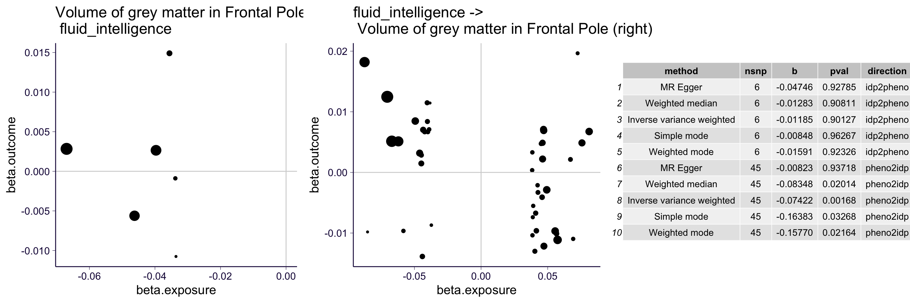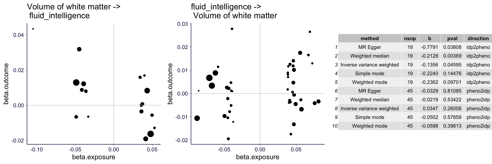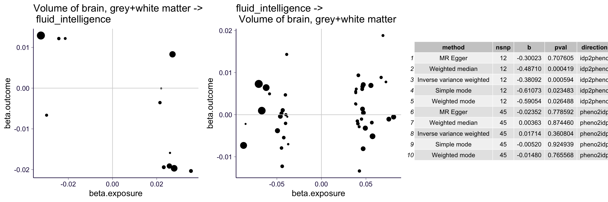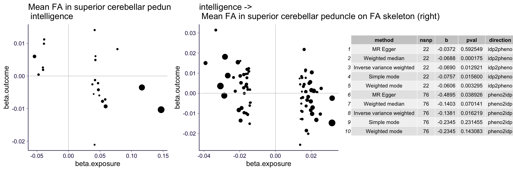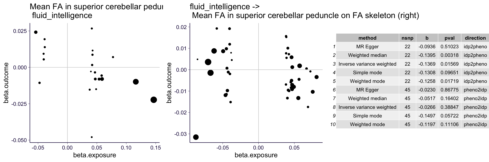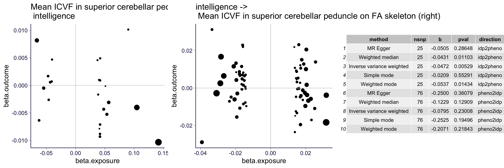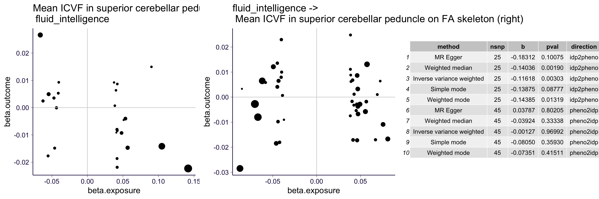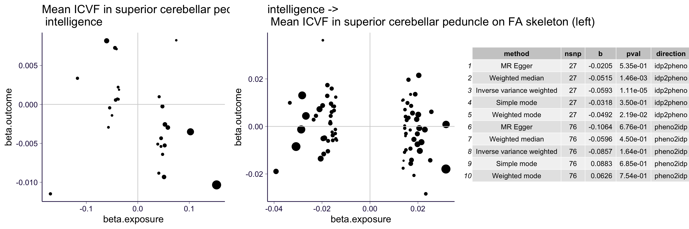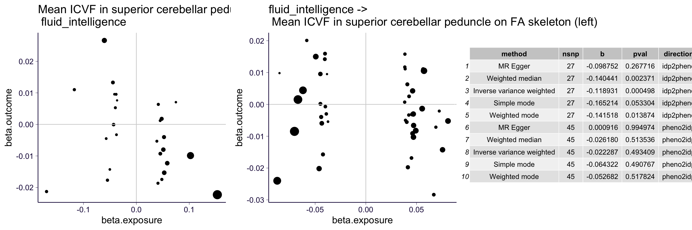